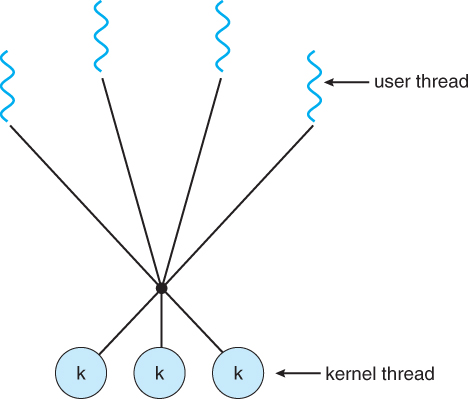

Multithreading Models
- Many-To-Many (N:M) Model: Several (N) user threads will map to several (M) kernel threads. Here, N ≥ M.
- Also known as N:M threading and as hybrid threading.
- Attempts to achieve the best of both worlds (true parallelism from the 1:1 model, free context switches from the N:1 model.)
- The number of created kernel threads will vary depending on the number of available CPUs, etc.
- This model is difficult to implement, making 1:1 model the currently popular choice.

Many-to-Many multithreading model. Taken from Bell, John T. "Threads." University of Illinois, Chicago.
 These notes by Miriam Briskman are licensed under CC BY-NC 4.0 and based on sources.
These notes by Miriam Briskman are licensed under CC BY-NC 4.0 and based on sources.